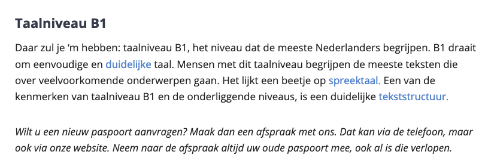
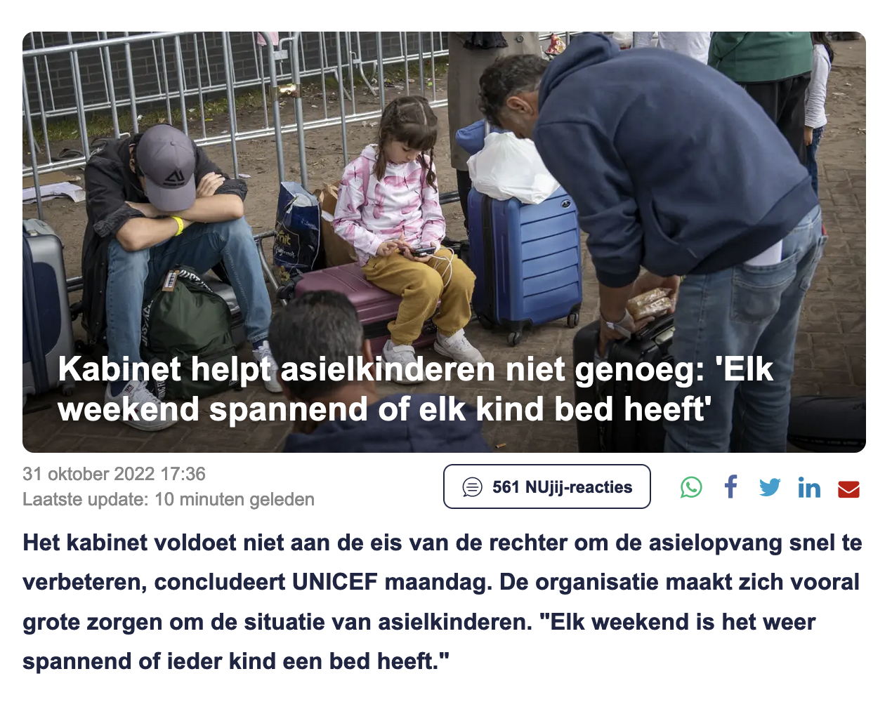

2.1 Is de tekst in taalniveau B1 geschreven?
Uitleg
Taalniveau B1 staat voor eenvoudig Nederlands.
Een tekst op B1-niveau bestaat uit makkelijke
woorden en uit korte, eenvoudige en actieve
zinnen.
Voor het schrijven van de teksten kan de
redactie gebruik maken van een taaltool. Deze
tool met het gemiddelde taalniveau van een
tekst en geeft aan welke aanpassingen nodig
zijn om het gewenste niveau te bereiken.

Bron: Vet-Simpel.nl
2.2 Heeft de pagina een duidelijke titel die
de inhoud van de pagina beschrijft?
Uitleg
De toegankelijkheid van teksten zit hem niet
alleen in de structuur. Een toegankelijk tekst
is ook begrijpelijk. Die begrijpelijkheid kun
je vergroten door duidelijke titels en koppen
te gebruiken.
De titel van een pagina moet duidelijk
beschrijven waar de pagina over gaat en
(tussen-)kippen moeten het onderwerp of het
doel van de paragrafen die erbij horen
beschrijven.

Bron: nu.nl
2.3 Heeft de tekst duidelijk en beschrijvende
koppen en tussenkoppen?
Uitleg
De toegankelijkheid van teksten zit hem niet
alleen in de structuur. Een toegankelijk tekst
is ook begrijpelijk. Die begrijpelijkheid kun
je vergroten door duidelijke titels en koppen
te gebruiken.
Vermijd grote lappen tekst. Grote lappen tekst
zijn erg lastig te lezen voor gebruikers met
een autismespectrum stoornis of gebruikers met
dyslexie
2.4 Voor ingewikkeldere afbeeldingen die
informatie bevatten, zoals grafieken of
infographics, is een langere beschrijving
gemaakt (naast de alt-tekst).
Uitleg
De tekstuele uitleg is niet alleen handig voor
gebruikers met visuele beperkingen, maar een
tekstuele uitleg is ook gelijk goed voor de
vindbaarheid. Google kan de tekst indexeren.
Plaats een bijschrift boven of onder de
afbeelding.
2.5 Tekst is niet als afbeelding geplaatst
maar als echte tekst.
Uitleg
Sommige gebruikers zullen de website bezoeken
met behulp van een alleen-tekst browser, of
kunnen afbeeldingen hebben uitgeschakeld in
een gewone browser. Afbeeldingen van tekst
veroorzaken problemen, omdat deze voor
gebruikers moeilijker te begrijpen zijn.
Afbeeldingen van tekst veroorzaken ook
problemen voor gebruikers als ze het formaat
van websites willen wijzigen om ze duidelijker
te kunnen lezen, omdat afbeeldingen op deze
manier niet goed werken. Ze dragen ook bij aan
de tijd die nodig is om jouw website te laden,
dat is ook vaak een reden waarom gebruikers
een website verlaten, een kwestie van
ongeduld.
Tip
Uitzonderingen voor afbeeldingen van tekst
zijn onderworpen aan richtlijnen voor kleur.
2.6 Tabellen hebben een bijschrift of
samenvatting.
Uitleg
Een bijschrijft of samenvatting geeft vooraf
aan of de informatie in de tabel de moeite
waar is om door te nemen. Gebruikers kunnen
hun tijd en aandacht spenderen aan andere
content op de website.
Tip
Om het bijschrift of de samenvatting te
verbinden aan de tabel moet je de juiste code
gebruiken.
2.7 De werking van het formulier is
voorspelbaar (bijv. verzenden pas na zelf
klikken of informatie daarover).
Tip
Zorg dat jouw bezoeker op de hoogte is van de
wijziging die plaats gaat vinden. Informeren
betekent dat je in tekst aangeeft wat er zal
gebeuren als er een optie wordt geselecteerd
of formulierveld wordt ingevuld. Voorkom ook
dat een formulier automatisch wordt verzonden
zodra het laatste veld is ingevuld. Maak
bijvoorbeeld een verzendknop onder het
formulier. Pas als de bezoeker de knop
aanklikt, verandert de inhoud van de pagina.